Список ключей
Cписок всех ключей в нашей системе, снабжаться комментариями и пояснениями. Как ими пользоваться, сказано в разделе ключей
| Номер | Радикал | Картинка | Мнемоключик и примеры |
|---|---|---|---|
| 1 | ⼂ |
ПЧЕЛКА
В зависимости от создаваемой мнемо сценки ее можно заменять на другие мелкие предметы. 义 仞 |
|
| 2 | ⼧ |
БЕРЕТ такой носят на голове 宗 寤 |
|
| 3 | 十? | 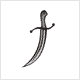 |
САБЛЯ ТУРЕЦКАЯ изогнутый вариант кит. цифры 10 戎 |
| 4 | ⼁ | 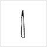 |
КОЛ шест, штырь и все из этой серии. 临 蓝 |
| 5 | ⼄乚 | 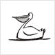 |
ПЕЛИКАН справо другое написание радикала. Кодируем как "безголовый пеликан" или рыболовный крючок. 乞 乿 |
| 6 | 人 𠆢 亻 |
ЧЕЛОВЕК справа другие варианты написания. Крайний правый вариант можно кодировать как "худой человек" 仄 债 佘 |
|
| 7 | 亠 | 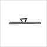 |
КРЫШКА ОТ КАСТРЮЛИ 亮 亢 |
| 8 | 丿 |
ЛОМИК-ФОМКА таким вскрывают закрытые двери 价 |
|
| 9 | 一 | 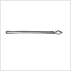 |
КОПЬЕ также это китайская цифра 1 丛 但 |
| 10 | 冖 | 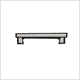 |
СКАМЕЙКА 冞 冥 |
| 11 | 厂 | 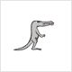 |
КРОКОДИЛЬЧИК СЛЕПОЙ потому что еще маленький. 压 厢 |
| 12 | 广 | 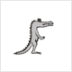 |
КРОКОДИЛ конечно, крокодил Гена 店 廓 |
| 13 | ⽧ |
КРОКОДИЛ С КРЫЛЫШКАМИ нелепейшее создание 疢 瘖 |
|
| 14 | ⼹ | 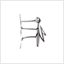 |
КОМАР 尋 寻 |
| 15 | 彑 | 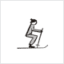 |
ЛЫЖНИК это другое написание радикала "комар" 彔 |
| 16 | ⼯ |
ГАНТЕЛЯ 巩 巯 |
|
| 17 | 勹 𠃌 | 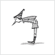 |
БУРАТИНО слишком любопытный для такого роста :) Справа безголовый буратино. 包 匐 局 |
| 18 | 刂 | 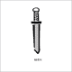 |
МЕЧ 剂 前 |
| 19 | 刀 乃 | 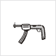 |
АВТОМАТ "ШМАЙСЕР" это другое написание радикала МЕЧ, в иероглифах встречаются оба варианта. А так как они визуально не похожи, пришлось их разделить. Справа - "поломанный автомат". 切 仞 秀 |
| 20 | 力 | 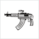 |
АВТОМАТ КАЛАШНИКОВА 劳 勉 |
| 21 | 丁 | 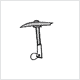 |
КАЙЛО есть такая штука у шахтёров. 厅 |
| 22 | 阝 | 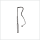 |
УДОЧКА 陔 |
| 23 | 了 | 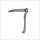 |
КОСА 疗 |
| 24 | 子 | 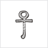 |
ЕГИПЕТСКИЙ ПОСОХ или крест-анх, странная такая штука, непонятная :) 孰 學 |
| 25 | ⼌ | 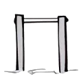 |
ТУРНИК в сценках можно заменять столом, где удобнее. 冈 |
| 26 | ⼉ | 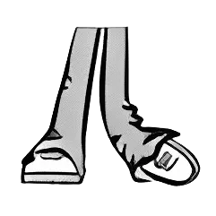 |
ПОЛОМАННАЯ НОЖКА волочется сзади, жалко до слез:) 允 兇 |
| 27 | ⼐ | 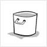 |
КАСТРЮЛЯ в зависимости от мнемо сцены это может быть любая емкость кружка, стакан и т.д. 凼 函 |
| 28 | 尸 | 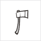 | ТОПОР сами понимаете для чего :) 屆 屠 |
| 29 | 户 戶 | 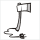 |
ЭЛЕКТРИЧЕСКИЙ ТОПОР полный бред :) Когда к простому радикалу добавляется какой-то штрих, черточка и чтобы не придумывать в этом случае отдельный мнемоключик, мы просто "апгрейдим" старый мнемоключ. вспомните вариант с "казаком". "казак с саблей", "казак с ружьем" и т.д. 戾 戺 |
| 30 | ⼊ |
ВИГВАМ здесь живут индейцы, типа палатка 內 兩 |
|
| 31 | ⼙ | 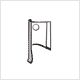 |
ТЕСАК чтобы что-нибудь отрезать:) 却 卻 |
| 32 | 㔾 | 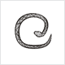 | ЗМЕЯ
это другое написание радикала ТЕСАК 危 卺 |
| 33 | 匕 | МАТРОСИК
танец такой есть, где матросик так танцует:) 此 化 |
|
| 34 | 比 | 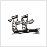 | МАТРОСИКИ 毘 毙 |
| 35 | ⼞ | 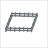 | ОГРАДА можно забор, изгородь 圂 圌 |
| 36 | 口 | 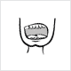 | РОТ отличается от предыдущего размером. В мнемосценках можно заменять любыми квадратными предметами, коробки, кубы и т.д. 咍 呜 咒 |
| 37 | 斤 | 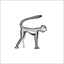 | ГИББОН это такая обезьяна :) 新 斧 |
| 38 | 厶 | 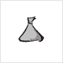 | КУЛЕК КОНФЕТ частый элемент иероглифов. Можно заменять на мешок или пакет, неважно с чем :) 能 |
| 39 | 大 | ВЕЛИКАН 夭 夼 |
|
| 40 | ⼸ | 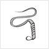 | КНУТ или хлыст, плетка 弭 弩 |
| 41 | ⼲ | 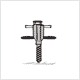 | ОТБОЙНЫЙ МОЛОТОК 幵 平 |
| 42 | ⼟ | РОСТОК ИЗ ЗЕМЛИ 坭 坐 | |
| 43 | 士 | 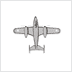 | БОМБАРДИРОВЩИК сравните с предыдущим радикалом 壶 壯 |
| 44 | 冫 | 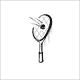 | ТЕННИСНАЯ РАКЕТКА 冶 凐 |
| 45 | 水 氵 | ВОДА вариант написания, который дан справа лучше представлять как капли воды. Написание другим шрифтом 沲 汆 汯 彔 |
|
| 46 | 犬 | СОБАЧКА вариант справа - это другое написание, его можно представлять в виде танцующей собачки Каштанки. 突 狈 |
|
| 47 | 乂 | КОСТИ в некоторых иероглифах можно ??? 凶 |
|
| 48 | 父 | ОТЕЦ с розгами 爸 爺 |
|
| 49 | 甘 | 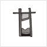 | ГИЛЬОТИНА такой штукой отрубали головы 甙 甝 |
| 50 | 廿 | 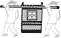 | ПАЛАНКИН а в таком носили очень важных персон 度 |
| 51 | 几 | 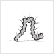 | ГУСЕНИЦА 凯 凭 凰 |
| 52 | 小 | 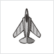 | МАЛЕНЬКИЙ САМОЛЕТИК нет, в самом деле, очень маленький самолетик 尒 尔 |
| 53 | 言 言 | КАСТРЮЛЯ С БЛИНАМИ некуда было сложить блины, а почему бы не положить их в кастрюлю :) Справа другое написание радикала. Этот радикал - традиционное написание радикала "маньяк" 詬 計 |
|
| 54 | 寸 | ПОДЪЕМНЫЙ КРАН С КРЮКОМ 尉 封 寺 |
|
| 55 | 巾 | 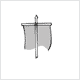 | ФЛАГ-ШТАНДАРТ наверное, такой был у римлян 帛 幏 |
| 56 | 方 | ФУТБОЛИСТ 旚 旁 |
|
| 57 | 殳 | НАПОЛЕОН тот самый толстенький и маленький:) 殶 殽 |
|
| 58 | ⼰ 已 | 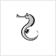 | МОРСКОЙ КОНЕК справа еще одно написание радикала. Отличаются между собой маленьким штришком. В мнемо сценках можно кодировать как морская лошадь и морской конь 巹 起 |
| 59 | 巳 | ВОДОЛАЗ это другое написание радикала "морской конек" а так они взаимозаменяемы 匏 |
|
| 60 | 巴 | ОЧКАРИК 爬 |
|
| 61 | 文 | СТРОИТЕЛЬ так уж сложилось - молдаванин :) 济 这 |
|
| 62 | 夂 | 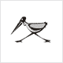 | СТРАУС ЭМУ запомните, что страус без хвоста. 处 备 |
| 63 | 支 | КАЗАК в шароварах 攲 攳 |
|
| 64 | 攵 | 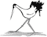 | ХВОСТАТАЯ ЦАПЛЯ Это другое написание радикала "казак с ружьем" 攻 故 敿 |
| 65 | 攴 | 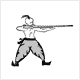 | КАЗАК С РУЖЬЕМ 敁 敊 |
| 66 | 皮 | 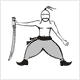 | КАЗАК С САБЛЕЙ 皯 皰 |
| 67 | 夕 | КЕНГУРУ 多 夗 |
|
| 68 | 歹 | 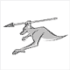 | КЕНГУРУ С КОПЬЕМ 死 殡 |
| 69 | 变 | 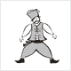 | КАЗАЧИЙ АТАМАН 变 |
| 70 | 又 | ПУЗО 反 取 |
|
| 71 | 爪 爫 | ДЖИНСЫ справа другое написание радикала 爬 爭 |
|
| 72 | 瓜 | 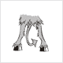 | ХВОСТ ЧЕРТА 瓢 瓟 |
| 73 | 女 | ДЕВУШКА закрепите за этим радикалом конкретный образ, можете представить свою знакомую подружку Машу, Олю, Свету... За счет этого мнемо сценки лучше запомнятся. 姻 媐 |
|
| 74 | 礻 示 | ТОП-МОДЕЛЬ справа тот же радикал в другом написание, кодируйте его как "толстуха" :) 祂 祠 祟 禢 |
|
| 75 | 石 | САМОКАТ вижу, что на картинке велосипед, но как-то приклеился за этим радикалом именно самокат 硈 磨 |
|
| 76 | 日 | СОЛНЦЕ просто нужно так запомнить, хотя визуально нисколечко не похоже :) 昝 显 晗 |
|
| 77 | 白 | 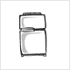 | ХОЛОДИЛЬНИК белый такой, двухкамерный 百 皓 皙 |
| 78 | 占 | 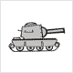 | ТАНК 呫 |
| 79 | 古 | МОГИЛКА 苦 |
|
| 80 | 舌 | 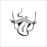 | ЯЗЫК немножко скошенный набок 舐 舍 |
| 81 | 瓦 | СУДЬЯ и ведь похож, чертяка 瓵 瓮 |
|
| 82 | 弋 | ВРАТАРЬ 试 |
|
| 83 | 斗 | ВРАТАРЬ МУТАНТ это, потому что у него две головы 斝 料 |
|
| 84 | 木 | ДЕРЕВО 栓 果 李 |
|
| 85 | 毛 | ПЕРО 毡 毞 毾 |
|
| 86 | 车 車 | ТЕЛЕГА справа традиционное написание радикала, кодируем как "старая телега". Этот радикал также можно кодировать как "машина" 轨 轼 輻 軍 |
|
| 87 | 彳 | ПЮПИТР штука такая у музыкантов, куда ноты ставят 彷 徥 |
|
| 88 | 行 | КОНСЕРВАТОРИЯ это там где много пюпитров 衍 衖 |
|
| 89 | 才 | БЭТМЕН крутой такой супергерой 闭 |
|
| 90 | 央 夬 | ШТАНГИСТ часто в иероглифах встречается безрукий штангист 快 英 |
|
| 91 | 豆 | СТАКАНЧИК были в давние времена, такие пластмассовые складные. 豉 豊 |
|
| 92 | 门 | ДВЕРЬ а в верхнем углу это звонок 闭 间 |
|
| 93 | 門 | ДВЕРЬ В САЛУН Салун - это ковбойский бар. Предыдущий радикал в традиционном написании. В составе других иероглифов встречаются оба, поэтому пришлось их разделить 閟 閵 |
|
| 94 | 网 罒 | СЕТКА ТЕННИСНАЯ справа другое написание радикала, кодируется, например, как сетка для настольного тенниса. 罗 罷 |
|
| 95 | 尢 无 | СТАРЫЙ МОНАХ у него ножка волочется, поэтому и старый:) Второй вариант - это "старый монах с копьем" 尪 抚 |
|
| 96 | 月 | ЛУНОЛИКАЯ НЕФЕРТИТИ это в Египте была царица такая 期 望 |
|
| 97 | 穴 | БАБА С КОРОМЫСЛОМ справа другое написание 窋 空 穷 穵 |
|
| 98 | 皿 | БАТАРЕЯ радиаторная, которая обогревает зимой 盔 盤 盖 |
|
| 99 | 血 | ТОРТ со свечкой 衁 衈 |
|
| 100 | 气 | МОТОЦИКЛИСТ 汽 氣 |
|
| 101 | 米 | РИС 籵 粢 类 |
|
| 102 | 廾 | НОЖНИЦЫ визуально мало общего, зато радикал похож на букву "Н" - ножницы 馵 |
|
| 103 | 开 | ЯПОНСКИЕ ВОРОТА тории, стоят перед синто святилищем 形 |
|
| 104 | 爿 丬 | ЗУБРИЛА справа другое написание радикала 牄 将 |
|
| 105 | 片 | КАРАТИСТ 牊 版 |
|
| 106 | 立 | АТЛЕТ сидит на шпагате 竑 竟 竖 |
|
| 107 | 风 風 | ХОККЕЙНЫЕ ВОРОТА справа традиционное написание радикала. 飑 颱 飀 飙 |
|
| 108 | 耳 | УХО 聐 聂 耷 |
|
| 109 | 衣 衤 | КИМОНО справа другое написание радикала, встречаются часто оба. Можно одно кодировать как женское кимоно, другое как мужское. Также радикал справа можно кодировать как "трансвестит", похож на радикал "топ-модель", только со штучкой:) 衵 裂 裞 袁 表 |
|
| 110 | 氏 | МАФИОЗИ с автоматом 氐 婚 |
|
| 111 | 京 | МУДРЫЙ КИТАЙСКИЙ СТАРИЧОК с усами Фу Манчу и козлиной бородкой 影 惊 |
|
| 112 | 马 馬 | ЛОШАДЬ справа традиционное написание радикала. Кодировать как старая лошадь 驭 骆 騃 駑 馵 |
|
| 113 | 鸟 鳥 | ПТИЦА справа традиционное написание радикала. Кодировать как старая птица 鸡 鸳 鳭 鴄 |
|
| 114 | 谷 | КРОТ 容 |
|
| 115 | 也 | РЫБАК бывает рыбак и с поломанной удочкой 地 |
|
| 116 | 革 | ЧЕРТИК 靸 鞮 鞶 |
|
| 117 | 黄 | КРЕСТОНОСЕЦ 黈 黉 |
|
| 118 | 足 ⻊ | ДЕД МАЗАЙ справа другое написание радикала 促 踐 |
|
| 119 | 疋 𤴔 | ЖЕНА МАЗАЯ справа другое написание радикала 疐 疏 |
|
| 120 | 心 忄 | СЕРДЦЕ справа другое написание. В мнемофразах кодировать как "маленькое сердце". 思 怕 愛 总 悝 |